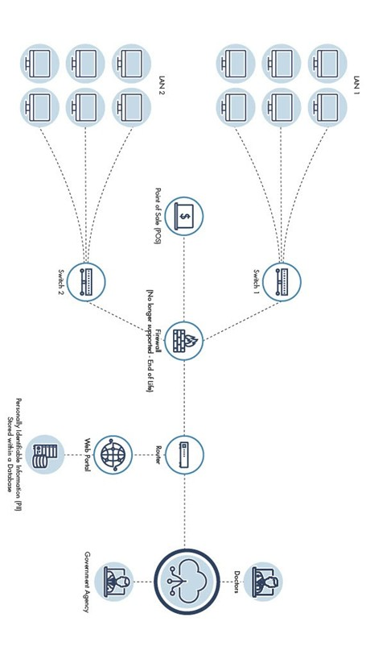

Project objective
Modernize outdated controls and system design while improving federal compliance readiness, access governance, asset visibility, risk assessment, and authentication.
What I produced
- Reviewed the security posture of connected systems and the organization as a whole.
- Identified gaps in access-control policies, account management, least privilege, security attributes, multifactor authentication, system inventories, and security plans.
- Mapped findings to NIST SP 800-53 control families and federal guidance.
- Prioritized technical and governance improvements and assigned continuing assessment needs.
Key decisions
- Treat policy, inventory, risk assessment, and technical controls as one coordinated remediation program.
- Update the system security plan before relying on future assessments.
- Require stronger user identification and MFA for access to sensitive systems.
- Use periodic assessment and authorization to verify controls remain effective.
Multiple control familiesTechnical and governance gaps assessed
Formal SARStructured security assessment deliverable
Continuous reviewAnnual and change-driven reassessment
Validation and analysis
- Documented assessment methodology, findings, affected systems, and control families.
- Connected recommendations to compliance and operational risk.
- Separated organization-wide findings from system-specific issues.
What I would improve next
- Add a formal remediation roadmap with owners, dates, and residual-risk acceptance.
- Include technical validation evidence for every implemented control.
- Create dashboards for control status and continuous monitoring.